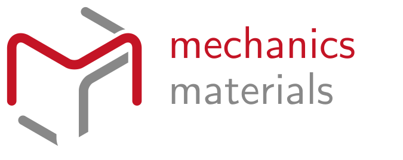

decrease the number n of half twists of the optimal band with n fold rotational symmetry
increase the number n of half twists of the optimal band with n fold rotational symmetry
number of half twists
3
click to play the everting motion
drag to evert the band
slide to change the speed of eversion
slide to change the width of the band
full screen
edge path
midline path
show unit
bending energy
midline curvature
colors
rainbow
digital
background Color
view angle
align axis
align plane

Welcome!
Would you like a guided tour of the application?
Start Tour
No Thanks